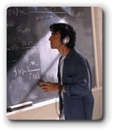
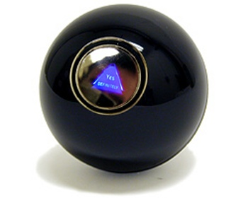
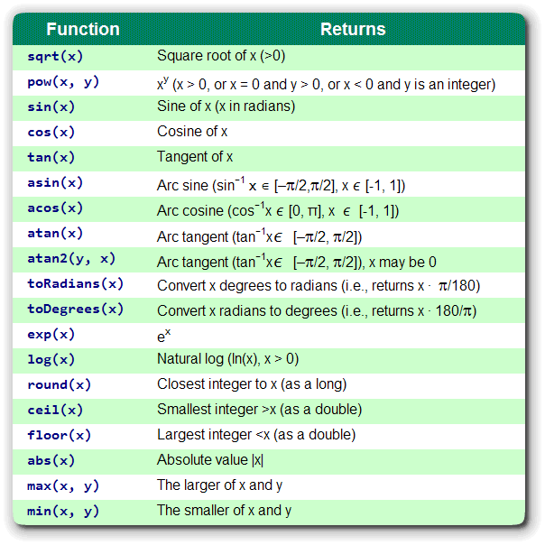
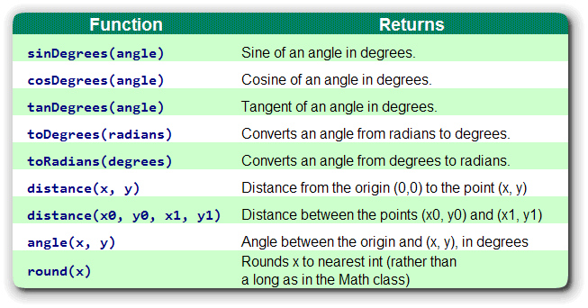
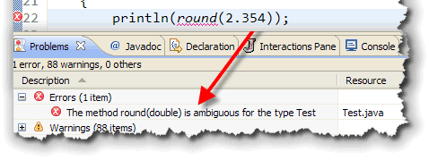

In earlier lessons you looked at Java's arithmetic operators, and learned how to write expressions. Many calculations, however, require more than a simple expression. To meet this need, most programming languages have libraries, collections of reusable functions that are used to build more complex software.In this lesson you'll look at the java.lang.Math class which contains functions for numeric operations such as calculating roots, sines and exponents.
You'll also be introduced to the Java primitive type designed to
hold characters, the char data type.
Let's start with the functions in the Math class.
The java.lang.Math Class

Thejava.lang.Math class
contains a set of functions for basic numeric operations.
What is a function? A function is a programming command that
returns a value. You can use functions in place of literal
values, variables or expressions in your programs.
Think of a function as "calculating black box", kind of like the magic eight-ball. You ask it a question (that's the input to the function) and it "answers" you by giving you back or returning a result.
Normally, you'll create a variable to store the result returned from a function, but you can also print the value, or pass it as a parameter to another method. Calling a function without storing or otherwise using the returned value is a common logical error in many programs.
Using Math Functions
Object-oriented libraries are called class libraries, and in Java,
these class libraries are organized into smaller "family" groups
called packages. To use the code in a package, you import
the package, like we've been doing for the classes in the acm.program
package.
The functions in the Math class are part of the
java.lang package. This package is automatically
loaded and referenced by your Java Virtual Machine. You don't
have to add any import statments to use any of the
classes contained in java.lang.
Actually, you don't have to use import statements to
access any class in any Java library. Instead, you can use the
fully qualified name, like acm.program.ConsoleProgram
in your code, and skip the import statements altogether.
All the import statement does is make your code simpler,
and easier to read.
Since Java 5 came out, the easiest way to use the functions in
the Math class is to add a static import
statement to the top of your program like this:
import static java.lang.Math.*;
After doing this, to call one of the Math functions,
(like the square root function shown here), you just write:
double root = sqrt(value);
In this case:
- sqrt() is the function you are calling.
- value is the parameter you are passing to the function.
For the
sqrt()function, value should be a number. - root is a variable used to store the answer returned
by the
sqrt()function. If you don't store or otherwise use the answer, the square root is still calculated, but nothing is done with the returned value.
Simply using the value like this is perfectly fine:
println(sqrt(value)); // Pass the returned value to another function
double amount = sqrt(value) * PI; // Use the value in an expression
This, however, is always a logical error when it comes to functions:
sqrt(value); // Returned value is discarded or ignored.
Static Method Syntax
All of the functions in the Math class are known
as class or static methods. Before Java 5
introduced the static import statement, the only way
to use a static method was to send a message to
the class that contains it instead of sending a message to
an object (like you did with the println() message
and the System.out object).
To use this alternative syntax to call a method in the Math
class, you just use the name of the class like this:
double root = Math.sqrt(value);
Math Functions
The Math class contains the normal set of functions
that you'd expect in a rudimentary math library. Java doesn't have a
exponential operator, for instance, but it does have a function
named pow() that will raise any number to a power.
Here's its signature:
double pow(double a, double b)
The method returns a raised to the bth
power as a double. Both parameters are of type double, but you can
pass int parameters as well.
Another method you may commonly use is the sqrt() method, which
returns the square root of its argument. You may also want to make use of the
static final (class) constants: E and
PI. (If you don't add the static import
statement, you'll need to refer to these as Math.E and
Math.PI).
There are also min() and max() functions for
finding the minimum and maximum of two values, and abs() function
for finding the absolute value of a number, and a round()
function for converting a floating-point number to its closest integer value.
Less frequently used methods (depending upon your interests, of course) include
the methods for performing logarithm and trigonometric functions. You'll find a
list in your text which I've included here:

Math.random()
One very useful function generates "random" numbers. To use it,
you call the Math.random() method like this:
double rand = random();
After you've done this, the double variable
rand will contain a number between 0.0
and 1.0. (The number will always be less than 1.0,
but it may include 0.0.)
The number returned by random() is called a
pseudorandom number, because the numbers produced by
the function repeat themselves if given the same starting
value (called the seed).
A number between 0.0 and 1.0 might not seem very useful by itself, but it is easy to "massage" the results into a form you can use, by using some of the calculations you studied in the Unit 2. Here's a possible application, for instance.
Pick a Year, Any Year
 Suppose you need to pick a random year from a particular
decade; you might be writing a Trivia application like
the greatest country music hits from the 1950s,
for instance, or something similar.
Suppose you need to pick a random year from a particular
decade; you might be writing a Trivia application like
the greatest country music hits from the 1950s,
for instance, or something similar.
To do this, you need to know two pieces of information:
- How many possible numbers are there?
- What's the lowest possible number?
For the "greatest hits" application, there are ten possible numbers, (1950, 1951,...1959), and the lowest possible number is 1950. Let's create a couple of constants to represent those two values:
final int RANGE = 10;
final int FLOOR = 1950;
Once we've done that, we can use Math.random() to
generate a random number for our featured year,
but before storing it in the variable, we'll manipulate it like this:
- Multiply the result by RANGE because we have 10 possiblities.
- Because
Math.random()can return 0.0, but never 1.0, add FLOOR to the result. - Because each year must be an integer value, cast
the result to an
int.
Here's what these steps look like in code:
int year = (int) (Math.random() * RANGE) + FLOOR;
The + FLOOR portion of the expression can go
inside or outside of the parentheses, but the multiplication
and the call to Math.random() must be
inside the parentheses. If you fail to do this, your
"random" numbers will all be the year 0, which
is probably not what you want.
ACM GMath Functions
We haven't yet started working with graphics, but when we do you'll find
that computing the coordinates of a graphical design can sometimes
require the use of simple trigonometric functions. Although functions like
sin and cos are defined in Java’s standard
Math class, you'll probably find them confusing in
graphical applications because of inconsistencies in the way angles
are represented.
In Java’s graphics libraries, angles are measured in degrees; in the
Math class, angles must be given in radians. To minimize
this confusion, the acm.graphics package includes a class
called GMath, which contains the additional trigometric and polar
conversion functions shown here:

To use these functions in your program, make sure that the acm.jar file is part of your project, and then include this line at the top of your file:
import static acm.graphics.GMath.*;
Most of these functions are simply degree-based versions of the standard trigonometric functions, but the distance, angle, and round methods are also worth noting.

If you import both theMath
and GMath functions in your program, you then have two
versions of the round() function, and Java can't figure out
which one to use, as you can see in the picture on the right.
The solution to an ambiguous function is to explicitly say which one you want to use like this:
println(GMath.round(2.345));
println(Math.round(2.345));
Of course, since the GMath class is in the acm.graphics
package, you'll also need to add the line:
import acm.graphics.*; // or
import acm.graphics.GMath;
to the top of your file. The static import statement you added
earlier isn't enough. You don't need to add anything for the Math.round()
line to work, though, because the Math class is automatically
imported as part of the java.lang package.
Java and Characters
 As you saw in Unit 1,
computers store character data by using an
agreed-upon correspondence or mapping between a number and
a character, similar to the encoding used in Morse Code.
As you saw in Unit 1,
computers store character data by using an
agreed-upon correspondence or mapping between a number and
a character, similar to the encoding used in Morse Code.
Rather than use Morse-Code, invented for the telegraph, computer makers invented new codes. One of these was EBCDIC, invented by IBM for use on their mainframe computers.
IBM considered EBCDIC a proprietary technology, so so the American Standards Institute (ANSI), created an "open source" alternative, called ASCII (The American Standard Code for Information Interchange), which has been, more or less, the standard in the PC and Unix worlds.
ASCII
;)
ASCII uses 7 bits to store its characters. In ASCII for instance, the number 65 stands for the capital A. Here is a chart showing the standard ASCII characters and their numeric representations. (If your eyesight is getting a little blurry, as mine is, click the image and you can see the chart full-size.)
Because ASCII only uses 7 bits, each character can be stored in
a single byte, with room left over for some additional information.
This additional bit has been put to a variety of uses. The early
CPM/PC word processor, WordStar, used the extra bit to embed
"soft" line breaks. With the introduction of the IBM PC, the
extra bit was used to provide an additional 128 characters,
including some widely used line-drawing characters.
Many, however found that they didn't need that extra bit after all, and that seven bits were more than enough. Do a search on ASCII using your favorite search engine, and you'll see what I mean. (The ASCII image appearing here is supposed to be a cow blowing bubbles, as far as I can tell.)
~(^^^^)~
) @@ \~_ |\
/ | \ \~/
( 0 0 ) \ | | Hey
---___/~ \ | | Hiya
/'__/ | ~-_____/ | Doin?
o _ ~----~ ___---~
O // | |
((~\ _| -| Oops! I mean MOOOOOOO
o O //-_ \/ | ~ |
^ \_ / ~ |
| ~ |
| / ~ |
| ( |
\ \ /\
/ -_____-\ \ ~~-*
| / \ \ .==.
/ / / / | |
/~ | //~ | |__|
~~~~ ~~~~
Unicode
Although ASCII met a real need for a quasi-universal character encoding during the first half-century of the computer age, today ASCII is really showing its age. The computer world is now much larger than it was in the past, especially with the Internet explosion. Not only are computer users using non-English languages, but their languages are often written using non-Roman alphabets; alphabets that won't fit into ASCII's seven or eight bits, no matter how much they are shoe-horned.
Several alternative character encoding schemes have been suggested to replace ASCII, and as a programmer you might have to deal with some of them, (such as DBC, and MBCS). By now, however, it looks like the winner in the race to succeed ASCII is the Unicode character set, which is, as you might suspect, is used by Java to represent characters. You can find more about Unicode at:
The char Data Type
Java stores characters using the char
primitive data type. Unlike the integer and floating-point types,
the char family has only one member. Each
char variable, (or literal), uses two bytes
of storage. Each character is stored as an unsigned binary
integer, and is interpreted by using the Unicode character set.
By now, the pattern you use to create a char
variable should look familiar; it's the same one you used to
create int and double variables.
You create char variables like this:
char middleInitial = <initial value here>;
char controlA = <initial value here>;
char horizontalTab = <initial value here>;
char backSlash = <initial value here>;
char copyright = <initial value here>;
Each of the variables shown here requires a slightly different form of initialization, even when we use character literals.
A Literal D
Let's start with the first, and easiest of these examples. How do you write a literal D? (That's my middle initial.) If you try simply inserting the character—which is what you did with literal integers and floating point numbers—you end up with this:
char middleInitial = D;
At first, this looks OK, but it turns out to have a fatal flaw. How does the compiler know whether you want the character literal D, or the variable named D? Since D is a valid name for a variable, the compiler goes searching for it, comes up empty, and issues a stern rebuke.
The solution is easy. To placate the Java compiler, we simply have to add some punctuation to our character to let the compiler know that it is, in fact, a character literal. The punctuation you use is the single quote (') character. With this new-found knowledge, it's obvious that our definition should be written as:
char middleInitial = 'D';
When you write a character literal, you can only enclose one single character at a time; also, make sure you use the single quotes, not the double quotes. These are both illegal:
char initials1 = 'SDG'; // Too many characters
char initials2 = "D"; // A String literal, not a char
Notice that even though the second example contains only a single
character, it is not a char literal, but a
String literal. Strings are objects, not primitive
types, and so Java won't permit this assignment.
Other Literals
Writing a literal D proved to be quite simple, but how about the other characters? Let's start with controlA.
The first 128 characters in the Unicode character set are the same as those used by ASCII. In ASCII, (and in Unicode), the first 32 characters are called control characters. These are non-printing characters that were given the name control characters because they were used to control terminals and printers during the early days of computing.
To produce a control character, you hold down the Ctrl key on your keyboard (much like you would with the Shift key), and press one of the alphabetic characters A-Z. This yields the control characters whose ASCII/Unicode values are 1-26.
Control characters still are used to control the programs you run. If you open your word processor and start typing, when you type Ctrl+S, instead of inserting the character with the Unicode value 19 (Ctrl-S), your word processor is likely to save your file instead.
As you may have guessed, you can initialize controlA by just using its integer Unicode value like this:
char controlA = 1; // Unicode 1 is Control-A
A better way, (because it makes your intentions clearer), is to use a Unicode escape sequence, which you'll meet in the next few sections.
"Special" Control Characters
The next character we need to initialize is called horizontalTab. If you look back at the ASCII chart, or at the first page of the Unicode character charts, you'll see that many of the control characters have names, which allude to their functions under traditional computer systems. For instance, the character Unicode 7 (Ctrl-G) is also called the BEL character, because it produced audible output on the early teletypes.
Using the same scheme, Unicode character 8 was the BS (back-space) character, and Unicode character 9 was the horizontal tab character, or HTAB, the character produced by pressing the Tab key on your keyboard.
Rather than remembering which code belonged to which key, however, programmers came up with a shorthand for these keys called an escape sequence. Here's a short explanation, repeated from Lesson 2D, where the concept was first introduced:
An escape sequence is a method of writing "difficult" characters, that is, characters that are invisible or that are used, normally to delimit other characters.
The first part of an escape sequence is to designate one
character as the "escape character". When that character
is encountered—in a character literal or in a group of
characters, called a String—the compiler treats
it as a flag that means:
In Java, the escape character is the backslash. Whenever a backslash appears in a character constant, the following character is set aside for special treatment.
Java maintains "special notation" for several of the common control characters, as escape sequences, which you also met back in Unit 2. These include:
| \n | The newline character (Unicode 10) |
|---|---|
| \r | The carriage-return (ENTER) (Unicode 13) |
| \t | The horizontal tab character (Unicode 9) |
| \f | The form-feed character (Unicode 12) |
| \b | The backspace character (Unicode 8) |
With this information, it's easy to see how to initialize the horizontalTab variable, using one of the special escape characters:
char horizontalTab = '\t';
Notice that when you use an escape sequence to
initialize a char variable, that you use single
quotes around the whole sequence. The compiler turns the
compiled code into a single character.
Unicode Escapes
In addition to using one of the special escape values shown here, you can use an escape sequence to represent any character in the Unicode character set. A Unicode escape sequence starts with a backslash-u, like this:
char copyright = '\u . . .';
and is followed by the four-digit, hexadecimal Unicode value, which you can look up at the Unicode Consortium. (These are the PDF charts, I usually prefer the GIF charts, but they seem to have disappeared from the site. There is a JavaScript utility available for finding Unicode characters, which you may prefer.)
Once you have the completed value, you put the whole thing in single quotes, just like a regular character literal.
Here are some examples:
char controlA = '\u0001';
char tradeMark = '\u2122';
char copyright = '\u00A9';
Glyphs vs Characters
Java allows you to use any of the Unicode characters in your
programs, by simply following the examples above. However, you
may be disappointed to find that not all of the characters
show up in your applets.
That's because even though Java stores
the characters internally using Unicode, when it displays the
characters, it uses the glyphs of your operating system's
native font. If the native font is Unicode aware, (that is, if it
has "pictures" [glyphs] for all of the Unicode characters), your
applet will display correctly. If, however, it only contains the
basic ASCII characters, then the others will not display.
This is further complicated when it comes to Java's widget sets. Even if you use a Unicode font in your applet, your platform's widgets, (like the AWT
Label and
Button classes), may not support
Unicode. The more modern widgets, like the JFC
JLabel and JButton usually do
support Unicode, however.
Coming Up ...
In this lesson you looked at using mathematical functions
in Java. You looked at the Math class in the
Java class libraries java.lang package, and
the math functions available in the ACM GMath
class. Finally, you finished up by learning about how
characters are represented in Java.
In the next lesson, you'll take a look at the
functions in the String class. You'll
also take a quick look at the JavaDoc API
documentation for the class and learn to find your
way around.